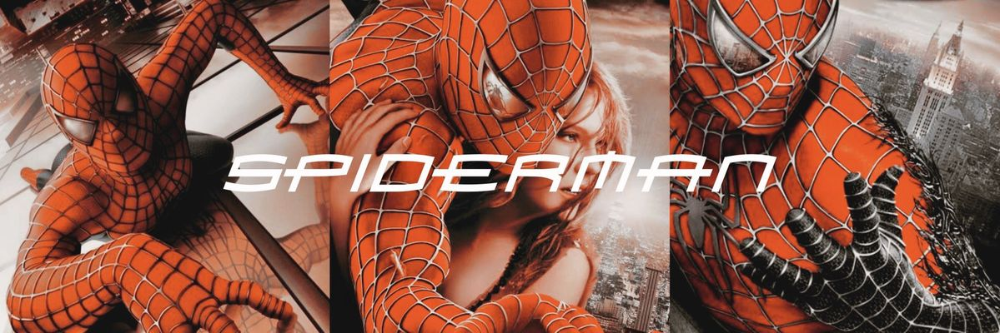

SPIDER-MAN
THE BEGINNING OF A HERO
Released in 2002, Spider-Man tells the origin story of Peter Parker and how an ordinary teenager becomes Spider-Man after being bitten by a genetically altered spider.
Peter learns that having extraordinary abilities also comes with extraordinary responsibility. After losing Uncle Ben, he understands that his powers are not meant only for himself.
What Peter learns: Responsibility is not about what you can do, but about what you choose to do with your power.